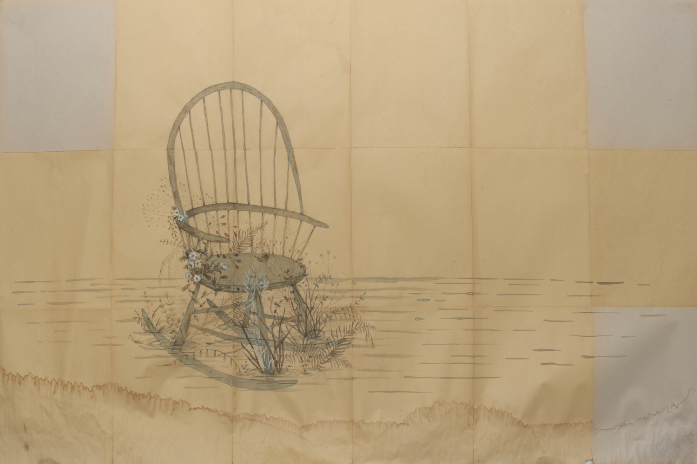
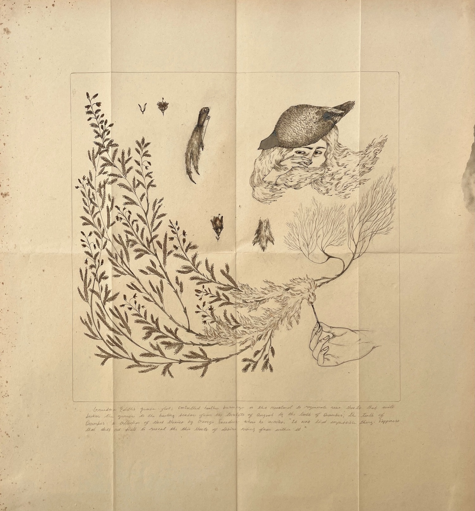
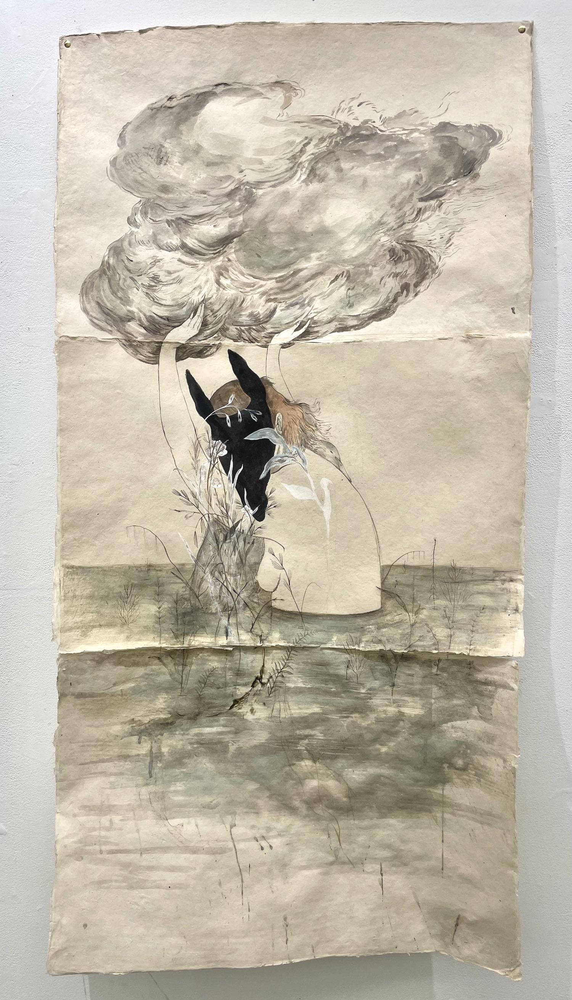
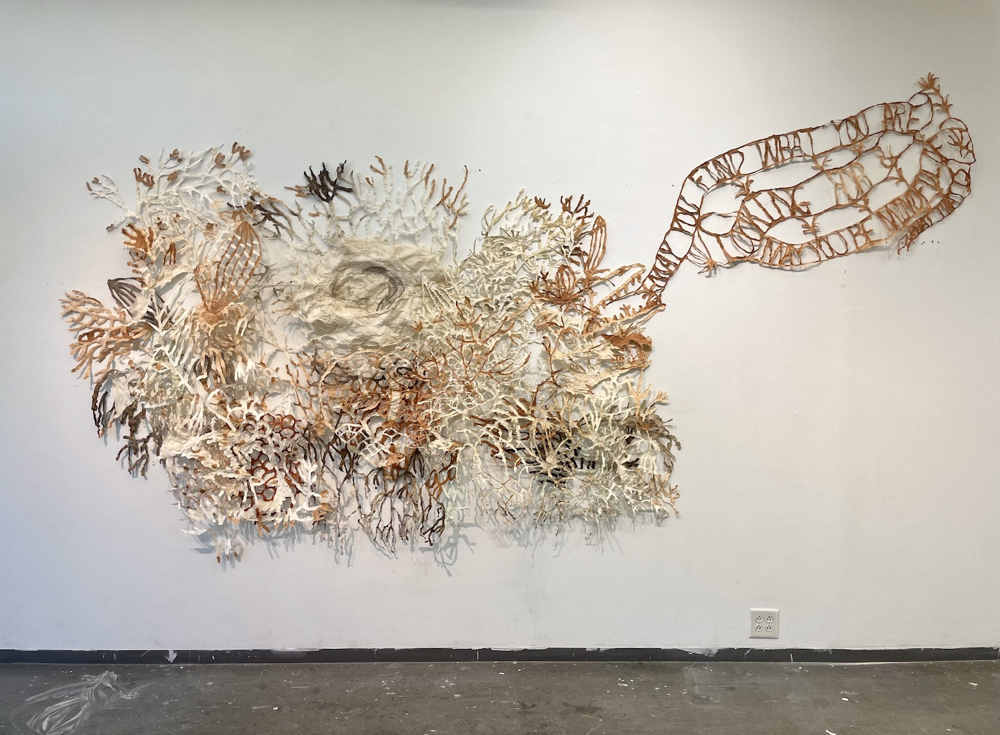

paper pulp, soil, walnut, verdigris. 13’ x 7’
Katherine (or Kit) Rutter is a visual artist whose work explores ecology, impermanence, emotional entanglements, and multiple matters of care & connection. Her practice involves drawing, papermaking, bookmaking, intaglio, writing, and foraging for materials. She lives in the woods with her dog Dorothy, and is currently an MFA candidate at the University of Georgia.
Katherine (or Kit) Rutter is a visual artist whose work explores ecology, impermanence, emotional entanglements, and multiple matters of care & connection. Her practice involves drawing, papermaking, bookmaking, intaglio, writing, and foraging for materials. She lives in the woods with her dog Dorothy, and is currently an MFA candidate at the University of Georgia.